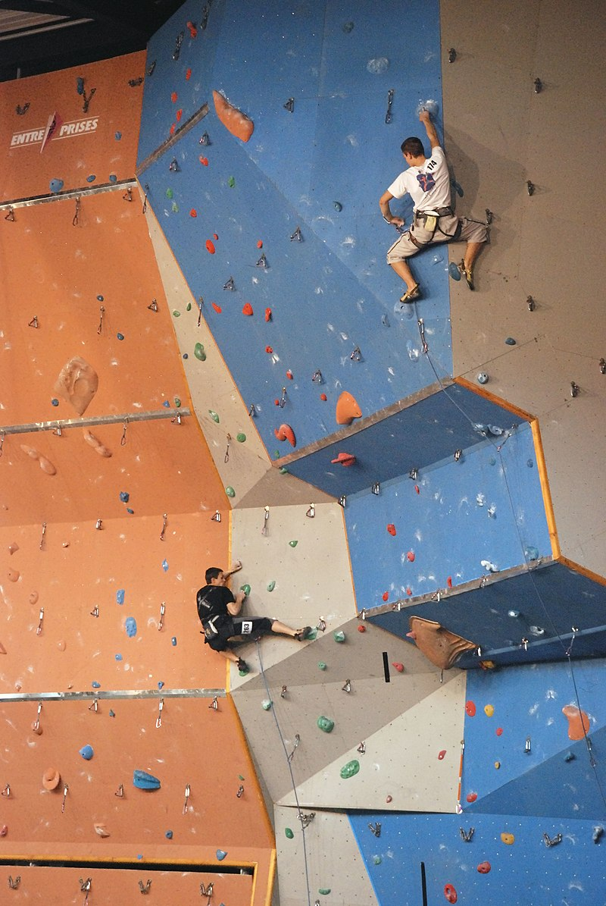
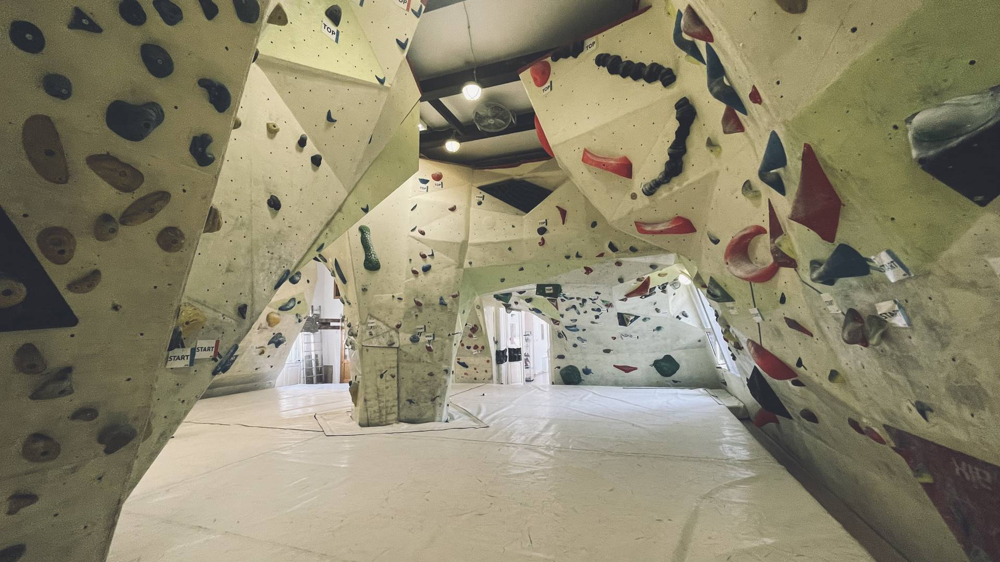
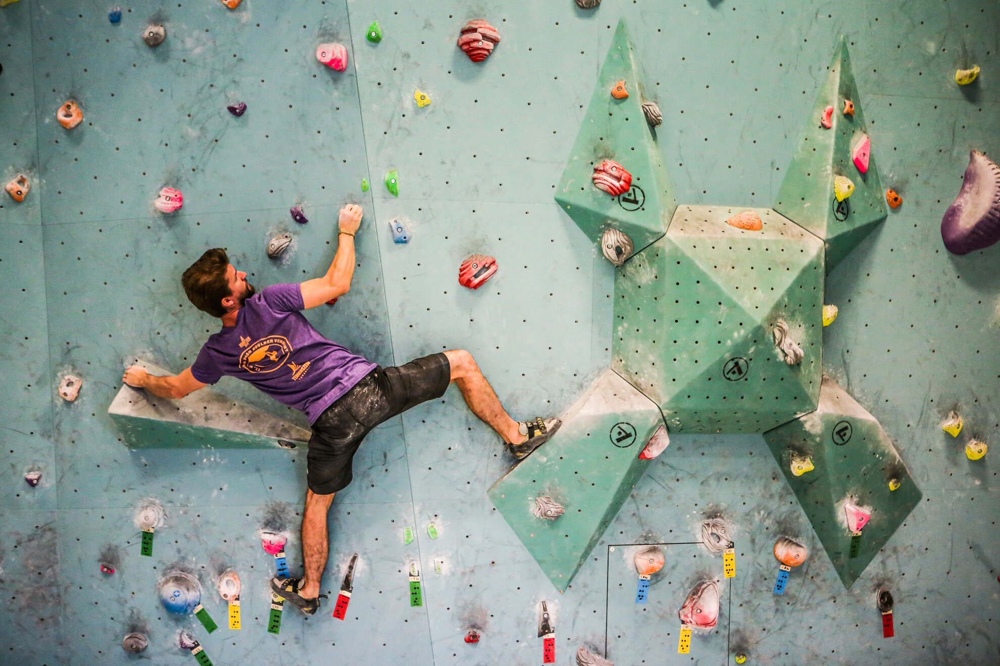

A falmászás
A sziklamászás, mint tevékenység talán egyidős az emberiséggel, azonban sportággá csak az utóbbi évtizedekben vált. A sziklamászás egy szabadban űzhető sporttevékenység, ami azt vonja maga után, hogy többnyire napközben, tavasztól őszig, jó időben űzhető. A falmászást, mint tevékenységet valószínűleg sziklamászók találták ki, akik otthon, időjárástól, évszaktól és napszaktól függetlenül - kondíciójuk megőrzése céljából - sportolni szerettek volna. Kialakult tehát a falmászás, ami többnyire zárt térben, műfalon történő mászást jelent.
A sport jellegzetességei
A falmászás műfalon történik, mely egy vas- vagy faszerkezetből épült vázra szerelt furnér- OSB- vagy rétegelt-lemezből álló faldarab, amelyben menettel ellátott lyukakba szerelt ún. fogások vannak elhelyezve. A fogások mérete, alakja és gyakorisága megkönnyíti, ill. megnehezíti a műfalon történő fel, le ill. oldalra jutást. A falmászással megszerezhető a sziklamászáshoz szükséges erőnlét és technikai tudás. A falmászás egyik előnye, hogy a mászás rizikófaktorát nagyságrendekkel lecsökkenti a sziklamászáshoz képest, ugyanis a műfalon történő mászás sokkal jobban kontrollálható, mint a természetben történő sporttevékenység, ezáltal biztonságosabb.
A falmászás mint versenysport
A világ minden részén, így Magyarországon is a falmászás versenysporttá nőtte ki magát. Nemzeti kupákat, bajnokságokat, valamint nemzetközi versenyeket is rendeznek, többek között világbajnokságot is.2020-as olimpián, Tokióban bemutatkozó sportágként lesz az olimpiai program része a falmászás, avagy hivatalos nevén: sportmászás. Az ötkarikás játékokon mind a három szakág, a nehézségi, a gyorsasági és a boulder (azaz a biztosítás nélküli, kis magasságú, vízszintes) mászás helyet kap, igaz, nem külön-külön értékelik az egyes szakágban elért eredményeket, hanem összesítésben.
